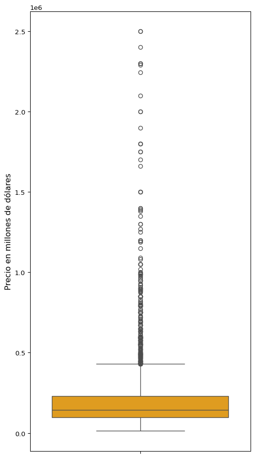
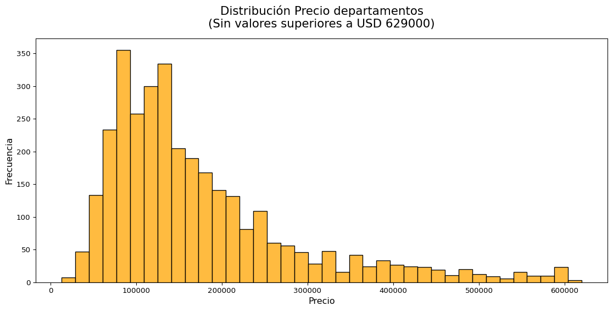
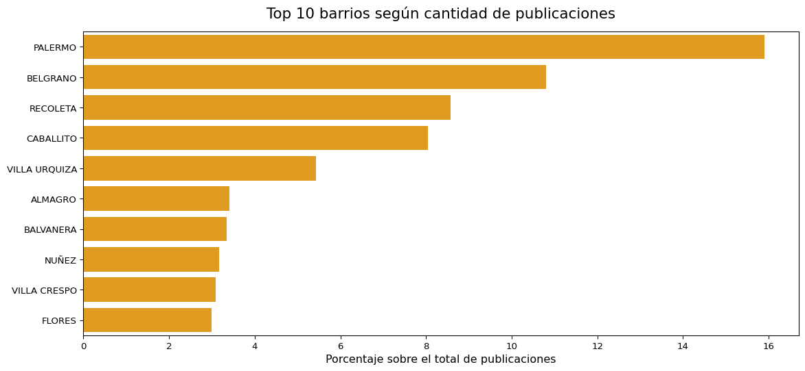

Code
import pandas as pd
import matplotlib.pyplot as plt
import plotly.express as px
import os
import seaborn as sns
import geopandas
import plotly.io as pio
import numpy as np
from scipy.stats import iqr
pio.renderers.default = 'notebook_connected'import pandas as pd
import matplotlib.pyplot as plt
import plotly.express as px
import os
import seaborn as sns
import geopandas
import plotly.io as pio
import numpy as np
from scipy.stats import iqr
pio.renderers.default = 'notebook_connected'# datos scrapeados del sitio Properati
# notebook scraping = https://github.com/MartinRV19/departamentos-CABA-venta
cwd = os.getcwd()
df = pd.read_csv(cwd + '\\departamentos_venta_2022_properati_modified.csv', index_col=None, header=0)df.head()| Precio(USD) | m2_cubiertos | m2_totales | BARRIO | USD_m2 | |
|---|---|---|---|---|---|
| 0 | 80000 | 45 | 45 | LINIERS | 1777 |
| 1 | 62000 | 40 | 40 | LINIERS | 1550 |
| 2 | 80000 | 47 | 47 | FLORES | 1702 |
| 3 | 90000 | 48 | 48 | LINIERS | 1875 |
| 4 | 115000 | 52 | 52 | VILLA CRESPO | 2211 |
df.info()<class 'pandas.core.frame.DataFrame'>
RangeIndex: 3407 entries, 0 to 3406
Data columns (total 5 columns):
# Column Non-Null Count Dtype
--- ------ -------------- -----
0 Precio(USD) 3407 non-null int64
1 m2_cubiertos 3407 non-null int64
2 m2_totales 3407 non-null int64
3 BARRIO 3407 non-null object
4 USD_m2 3407 non-null int64
dtypes: int64(4), object(1)
memory usage: 133.2+ KB3407 departamentos
df.describe()| Precio(USD) | m2_cubiertos | m2_totales | USD_m2 | |
|---|---|---|---|---|
| count | 3.407000e+03 | 3407.000000 | 3407.000000 | 3407.000000 |
| mean | 2.119949e+05 | 78.033754 | 83.790725 | 2560.814793 |
| std | 2.285894e+05 | 56.635677 | 61.321410 | 954.245856 |
| min | 1.294500e+04 | 19.000000 | 19.000000 | 375.000000 |
| 25% | 9.700000e+04 | 44.500000 | 47.000000 | 1946.000000 |
| 50% | 1.450000e+05 | 61.000000 | 66.000000 | 2403.000000 |
| 75% | 2.300000e+05 | 88.000000 | 96.000000 | 2977.000000 |
| max | 2.500000e+06 | 624.000000 | 624.000000 | 11229.000000 |
El 75% de los departamentos valen menos de USD 230.000
Hay un rango de departamentos entre USD 375 a USD 11.229 el m2
p99 = np.percentile(df['Precio(USD)'],99)
print(int(p99))1199400El 99% de los departamentos valen menos de aprox. USD 1.2M
fig, ax = plt.subplots(figsize=(6,12))
sns.boxplot(y="Precio(USD)", data=df,color='orange')
ax.set_ylabel('Precio en millones de dólares', size=12)
plt.show()
IQR = iqr(df['Precio(USD)']) # rango intercuartil
print(IQR)133000.0# rango superior "extremo" para detectar outliers = percentil 75 + 3 * rango intercuartil
p75 = np.percentile(df['Precio(USD)'],75)
rango_superior = p75 + 3 * IQR
cantidad_outliers = len(df[df['Precio(USD)'] >= rango_superior])
print(f'Rango Superior: {rango_superior}')
print(f'Cantidad de outliers: {cantidad_outliers}')
print(f'Proporción de outliers sobre el total: {round(cantidad_outliers/len(df),2)}')Rango Superior: 629000.0
Cantidad de outliers: 148
Proporción de outliers sobre el total: 0.04fig, ax = plt.subplots(figsize=(14,6))
ax = sns.histplot(data=df, x='Precio(USD)',ax=ax,color='orange')
ax.set_ylabel('Precio en millones de dólares', size=12)
plt.show()IQR = iqr(df['Precio(USD)']) # rango intercuartil
print(IQR)133000.0# rango superior "extremo" para detectar outliers = percentil 75 + 3 * rango intercuartil
p75 = np.percentile(df['Precio(USD)'],75)
rango_superior = p75 + 3 * IQR
cantidad_outliers = len(df[df['Precio(USD)'] >= rango_superior])
print(f'Rango Superior: {rango_superior}')
print(f'Cantidad de outliers: {cantidad_outliers}')
print(f'Proporción de outliers sobre el total: {round(cantidad_outliers/len(df),2)}')Rango Superior: 629000.0
Cantidad de outliers: 148
Proporción de outliers sobre el total: 0.04fig, ax = plt.subplots(figsize=(14,6))
ax = sns.histplot(data=df, x='Precio(USD)',ax=ax,color='orange')
ax.set_ylabel('Precio en millones de dólares', size=12)
plt.show()fig, ax = plt.subplots(figsize=(14,6))
datos_sin_outliers = df[df['Precio(USD)'] <= rango_superior]
ax = sns.histplot(data=datos_sin_outliers, x='Precio(USD)',ax=ax,color='orange')
ax.set_title(f'Distribución Precio departamentos\n(Sin valores superiores a USD {int(rango_superior)})',{'fontsize': 16},pad=15)
ax.set_xlabel('Precio', size=12)
ax.set_ylabel('Frecuencia', size=12)
plt.show()
top_10_barrio_porcentaje = df.value_counts('BARRIO',normalize=True).rename('porcentaje').mul(100).reset_index().sort_values('porcentaje',ascending=False)[0:10]
fig, ax = plt.subplots(figsize=(14,6))
ax = sns.barplot(x="porcentaje", y="BARRIO", data=top_10_barrio_porcentaje,color='orange')
ax.set_title('Top 10 barrios según cantidad de publicaciones',{'fontsize': 16},pad=15)
ax.set_xlabel('Porcentaje sobre el total de publicaciones', size=12)
ax.set_ylabel('')
plt.show()
url = 'https://cdn.buenosaires.gob.ar/datosabiertos/datasets/barrios/barrios.geojson'
geodf = geopandas.read_file(url)
geodf = geodf[['BARRIO','geometry']]
geodf.set_index('BARRIO',inplace=True)
geodf.head()| geometry | |
|---|---|
| BARRIO | |
| CHACARITA | MULTIPOLYGON (((-58.45282 -34.59599, -58.45366... |
| PATERNAL | MULTIPOLYGON (((-58.46558 -34.59656, -58.46562... |
| VILLA CRESPO | MULTIPOLYGON (((-58.42375 -34.59783, -58.42495... |
| VILLA DEL PARQUE | MULTIPOLYGON (((-58.49461 -34.61487, -58.49479... |
| ALMAGRO | MULTIPOLYGON (((-58.41287 -34.61412, -58.41282... |
geodf.index.sort_values()Index(['AGRONOMIA', 'ALMAGRO', 'BALVANERA', 'BARRACAS', 'BELGRANO', 'BOCA',
'BOEDO', 'CABALLITO', 'CHACARITA', 'COGHLAN', 'COLEGIALES',
'CONSTITUCION', 'FLORES', 'FLORESTA', 'LINIERS', 'MATADEROS',
'MONSERRAT', 'MONTE CASTRO', 'NUEVA POMPEYA', 'NUÑEZ', 'PALERMO',
'PARQUE AVELLANEDA', 'PARQUE CHACABUCO', 'PARQUE CHAS',
'PARQUE PATRICIOS', 'PATERNAL', 'PUERTO MADERO', 'RECOLETA', 'RETIRO',
'SAAVEDRA', 'SAN CRISTOBAL', 'SAN NICOLAS', 'SAN TELMO',
'VELEZ SARSFIELD', 'VERSALLES', 'VILLA CRESPO', 'VILLA DEL PARQUE',
'VILLA DEVOTO', 'VILLA GRAL. MITRE', 'VILLA LUGANO', 'VILLA LURO',
'VILLA ORTUZAR', 'VILLA PUEYRREDON', 'VILLA REAL', 'VILLA RIACHUELO',
'VILLA SANTA RITA', 'VILLA SOLDATI', 'VILLA URQUIZA'],
dtype='object', name='BARRIO')geodf.index[geodf.index.isin(df['BARRIO']) == False].unique() Index(['VILLA GRAL. MITRE', 'NUEVA POMPEYA', 'VILLA RIACHUELO'], dtype='object', name='BARRIO')df.BARRIO[df.BARRIO.isin(geodf.index) == False].unique()array(['LAS CAÑITAS', 'VILLA GENERAL MITRE', 'POMPEYA', 'BARRIO NORTE',
'CENTRO / MICROCENTRO', 'ONCE', 'TRIBUNALES', 'CONGRESO',
'PARQUE CENTENARIO', 'ABASTO'], dtype=object)# reemplazo valores en df
df.BARRIO.replace(['VILLA GENERAL MITRE','POMPEYA'],['VILLA GRAL. MITRE','NUEVA POMPEYA'],inplace=True)C:\Users\Usuario\AppData\Local\Temp\ipykernel_19284\3263965301.py:2: FutureWarning:
A value is trying to be set on a copy of a DataFrame or Series through chained assignment using an inplace method.
The behavior will change in pandas 3.0. This inplace method will never work because the intermediate object on which we are setting values always behaves as a copy.
For example, when doing 'df[col].method(value, inplace=True)', try using 'df.method({col: value}, inplace=True)' or df[col] = df[col].method(value) instead, to perform the operation inplace on the original object.
geodf.index[geodf.index.isin(df['BARRIO']) == False].unique() Index(['VILLA RIACHUELO'], dtype='object', name='BARRIO')print(df.BARRIO[df.BARRIO.isin(geodf.index) == False].unique())
# no se considera los 160 registros con nombre de barrios no oficiales
print(len(df[df.BARRIO.isin(geodf.index) == False]))['LAS CAÑITAS' 'BARRIO NORTE' 'CENTRO / MICROCENTRO' 'ONCE' 'TRIBUNALES'
'CONGRESO' 'PARQUE CENTENARIO' 'ABASTO']
160# tabla con valores promedio por barrio
tabla_valores_promedio = df.groupby('BARRIO').mean()[['Precio(USD)','USD_m2','m2_cubiertos','m2_totales']]tabla_valores_promedio.head()| Precio(USD) | USD_m2 | m2_cubiertos | m2_totales | |
|---|---|---|---|---|
| BARRIO | ||||
| ABASTO | 120475.000000 | 2259.000000 | 52.000000 | 58.750000 |
| AGRONOMIA | 101800.000000 | 1797.000000 | 56.400000 | 62.600000 |
| ALMAGRO | 127368.818966 | 2168.344828 | 59.387931 | 62.362069 |
| BALVANERA | 102242.456140 | 1744.307018 | 60.736842 | 63.640351 |
| BARRACAS | 167372.619048 | 2135.190476 | 81.523810 | 85.714286 |
# left join geopandasDataframe y valores promedio
merged_df = geodf.merge(tabla_valores_promedio,how='left',left_index=True,right_index=True) # remplaza valores faltantes en barrio VILLA RIACHUELO
merged_df.fillna(0,inplace=True)merged_df['Precio(USD)'] = merged_df['Precio(USD)'].astype('int64')
merged_df['USD_m2'] = merged_df['USD_m2'].astype('int64')
merged_df['m2_cubiertos'] = merged_df['m2_cubiertos'].astype('int64')
merged_df['m2_totales'] = merged_df['m2_totales'].astype('int64')merged_df.head()| geometry | Precio(USD) | USD_m2 | m2_cubiertos | m2_totales | |
|---|---|---|---|---|---|
| BARRIO | |||||
| CHACARITA | MULTIPOLYGON (((-58.45282 -34.59599, -58.45366... | 133904 | 2241 | 59 | 63 |
| PATERNAL | MULTIPOLYGON (((-58.46558 -34.59656, -58.46562... | 111090 | 2089 | 54 | 60 |
| VILLA CRESPO | MULTIPOLYGON (((-58.42375 -34.59783, -58.42495... | 138412 | 2169 | 62 | 68 |
| VILLA DEL PARQUE | MULTIPOLYGON (((-58.49461 -34.61487, -58.49479... | 150066 | 2224 | 66 | 72 |
| ALMAGRO | MULTIPOLYGON (((-58.41287 -34.61412, -58.41282... | 127368 | 2168 | 59 | 62 |
fig = px.choropleth(merged_df,
geojson=merged_df.geometry,
locations=merged_df.index,
color="USD_m2",color_continuous_scale="Viridis",
projection="mercator",
labels={'BARRIO': 'Barrio','USD_m2':'Precio m2 en USD'})
fig.update_geos(fitbounds="locations", visible=False)
fig.update_layout(margin={"r":0,"t":50,"l":0,"b":0})
fig.update_layout(title_text='Precio promedio del metro cuadrado de departamentos por barrio <br>CABA (Marzo 2022)')
fig.update_layout(coloraxis_colorbar_x=0.8,coloraxis_colorbar_y=0.5)
fig.show()